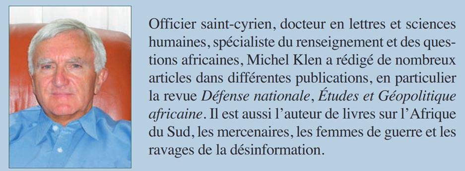
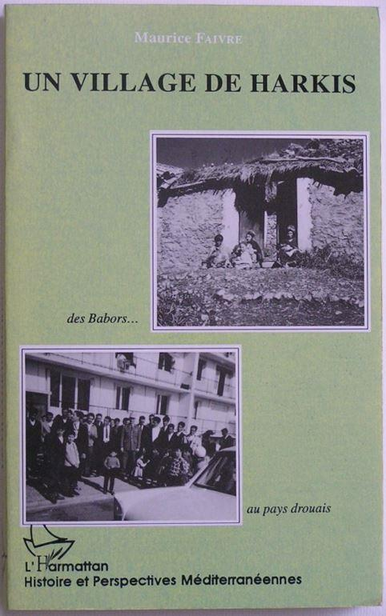

La tragédie de l’Algérie française par Michel KLEN
par Maurice FAIVRE
Saint Cyrien de 1966, Michel Klen analyse en détail les évènements de la guerre d’Algérie et souligne avec neutralité tous les traumatismes qui ont entraîné la fin de l’Algérie Française. Remontant dans le passé, il rappelle l’enlèvement des Chrétiens par les pirates barbaresques, la vente frauduleuse de blé au Directoire, l’opposition des Arabes à l’agriculture (selon Tocqueville), les hésitations de Bugeaud, l’approbation de la colonisation par Victor Hugo et Ferhat Abbas.
Il corrige à la baisse les estimations des victimes de la répression en mai 1945, août 1955 et octobre 1961; pour cette dernière, il cite le rapport des RG qui contredit les mensonges du maoïste Einaudi : les noyés dans la Seine sont les victimes de règlements de compte FLN/MNA. Il met en relation les interrogatoires «musclés» des DOP avec la terreur exercée sur les civils, la mutilation des blessés, la cruauté d’Amirouche, et reconnaît la victoire de Massu sur la barbarie et le pourquoi nous mourons du père Delarue.
Sa description de la société algérienne est celle d’une origine cosmopolite des Européens, et patriarcale des musulmans, sur laquelle s’exerce l’action samaritaine et psychologique des SAS, des EMSI, de madame Massu et du capitaine Sirvent, contrés par la pression médiatique des insoumis et des complices du FLN.
Les évènements prometteurs : bataille des frontières, 13 mai, ralliement d’Azzedine, plan Challe, referendum de septembre 1958, affaire Si Salah, sont suivis des feux de la révolte : barricades de février 1960, fondation de l’OAS, putsch des généraux, coopération des barbouzes avec le FLN, fusillades de Bab el Oued et de la rue d’Isly. L’échec du putsch est attribué au respect des militaires envers le chef de l’État.
Le drame final est celui du calvaire des pieds noirs et des harkis. Les concessions d’Evian (statut des Européens, abandon du Sahara) s’expliquent par l’évolution équivoque de la pensée gaulliste, qui influencé par le double jeu des grandes puissances, passe de la France intégriste de Tamanrasset à une politique d’association, puis à la reconnaissance de la république algérienne. La trêve d’août 1961 met fin aux succès de l’armée et contribue à la remontée des wilayas.
La peur de mai 1968 a entraîné le pardon accordé aux soldats perdus.
En conclusion, l’auteur confirme que l’histoire a été confisquée par le FLN: la libération du peuple a fait place à la dictature personnelle, puis militaire, au socialisme étatique, à la fracture sociale et à la guerre civile de 1990. De nombreux auteurs algériens confirment cette dérive. Lanzman, accusateur des harkis, fait acte de contrition. Albert Camus, partisan d’une réconciliation, est sans doute mort trop tôt.
Cette recension synthétique est une invitation à la lecture. Les analyses, les citations, la référence à de remarquables officiers et à des historiens objectifs confirment le bien-fondé des idées exprimées et la nécessité de revenir à une bataille des mémoires impartiale.
M.F.
In memoriam
Il y a quelques semaines, le général Maurice Faivre nous avait fait l’honneur de participer à ce numéro de Méthode en proposant cette recension de l’ouvrage de Michel Klen, que nous recommandons bien sûr à nos lecteurs passionnés d’Histoire.
Nous espérions que le général Faivre nous donnerait le plaisir de partager prochainement ses analyses sur la situation géopolitique actuelle malheureusement cet homme d’exception commandeur de la Légion d'honneur, nous a quitté ce 4 novembre 2020, dans sa 95 e année.
Né le 19 mars 1926, à Morteau, dans le Doubs, sa vie peut se résumer en trois mots : Français, Soldat, Chrétien. Français il aimait sa Patrie de tout cœur. Encore adolescent, engagé dans le scoutisme, il fut aux côtés de son père dans la Résistance.
C’est en 1960 que son histoire avec l’Algérie commence. Il arrive comme jeune capitaine des Dragons-parachutistes dans la région de Oued Berd dans le département de Sétif. S’il commence par y construire une troisième caserne pour assurer la sécurité des villages, il construit aussi des écoles dans les trois villages dont il a la responsabilité et son épouse infirmière soigne les villageois.
La fin de la guerre d’Algérie arrive. Le capitaine devenu commandant est appelé en Allemagne, à Baden-Baden, où face aux Soviétiques, il sert au sein de nos Services de Renseignements.
Maurice Faivre avec un officier général russe
Mais l’histoire le rattrape quand les premiers Harkis arrivent à Choisy-le-Roi et mentionnent tous qu’ils ont été sous les ordres du capitaine Faivre. L’armée l’appelle et lui donne carte blanche pour s’occuper de l’accueil des Harkis. Il fut indéfectiblement fidèle à l'honneur militaire qui commande de ne pas abandonner ses compagnons d'armes à l'ennemi et de nombreux harkis, notamment à Dreux, lui en seront éternellement reconnaissants.
Plus tard, historien militaire, il combattit la politique de la Repentance par laquelle certains cherchent à culpabiliser le peuple de France et à abaisser notre pays. Chrétien, il puisait en sa foi catholique l'énergie et la mesure indispensables à l'action.
Le général Faivre - Photo Emmanuel Campion
Une cérémonie religieuse a eu lieu le samedi 7 novembre en la chapelle Saint-Louis de l'École militaire et nous tenons à saluer ce Grand Homme et à adresser à sa famille nos plus affectueuses condoléances.
Partager cette page